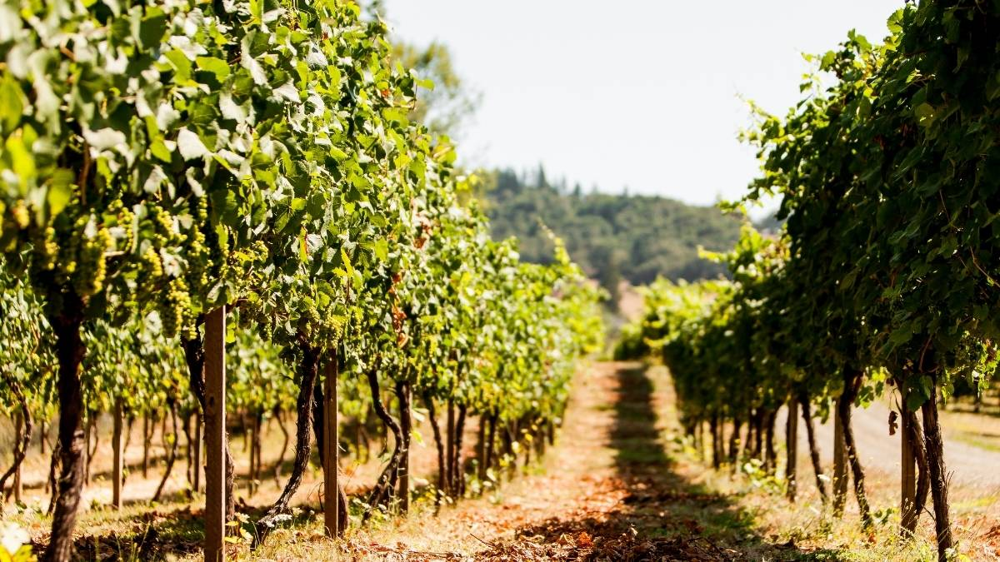
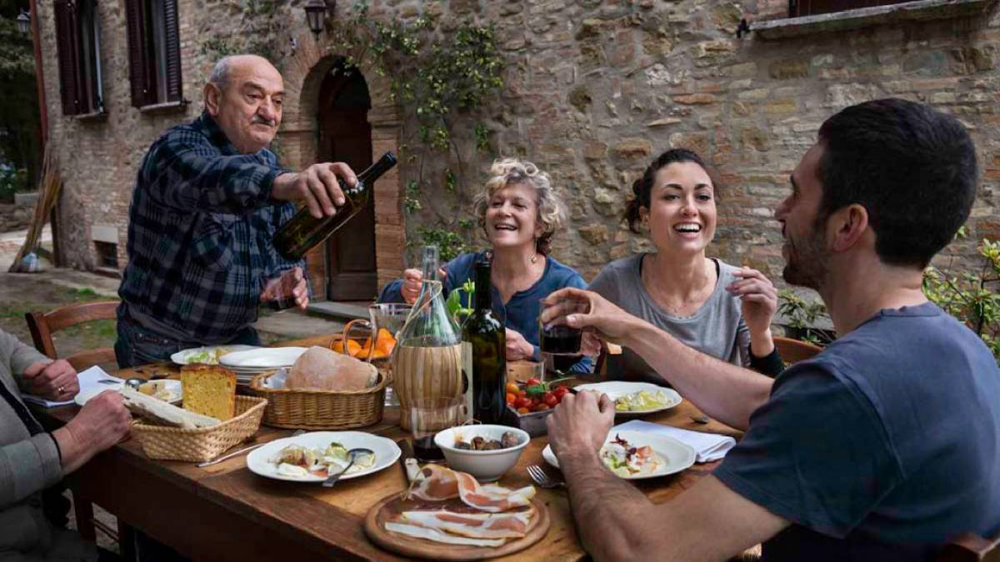

Nuestra familia
Mi abuelo empezó a hacer vinos para consumo personal. Con el tiempo se volvió un artista de la vitnicultura. El viejo hacía el mejor tannat que probé alguna vez. Mi padre heredó su talento, modernizando las bodegas para facilitar la producción. El vino siempre nos unió como familia, y ahora es mi turno de demostrar que nací para esto.
Nosotros
El viejo ya no está entre nosotros. Mi padre se retiró del rubro. Pero el vino sigue uniendo a la familia. La tradición de nuestra familia viene de Italia, y por eso cada fin de semana nos juntamos a comer pasta y tomar guitar wines, la más rica herencia.
